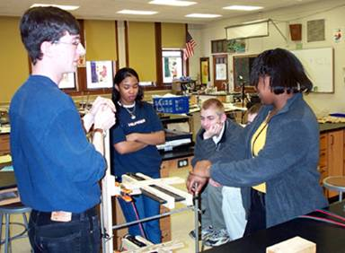
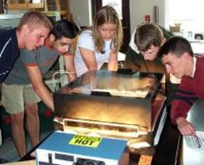

|
Classroom Outreach
Muon Detectors
Physicists
|
Muon
Detectors in the classroom
Muon detectors are available for use in the classroom to
study cosmic rays. Students are encouraged to design and execute
original research projects. Learn more about the detectors
used by the students during the year and the many kinds of
experiments the students can
do with them.
Various
other resources are available:
- Teachers can borrow sheets of lead, devices that records
temperature, or GPS add-on from PARTICLE to use in their
experiments.
- USB flash drives are handed out to make it easier for
students and teachers to transfer their data files.
- PARTICLE has several demonstration boards explaining how
the detectors work. These boards include a piece of scintillator
and an old PMT so the students can see what the detectors
look like underneath their light tight wrappings.
If a class comes up with an idea for a big project, PARTICLE
is willing to help them acquire the items or equipment they
need.
|
Physicists in the classroom: PARTICLE Fellow
The PARTICLE Fellow is a physics graduate student at the
University of Rochester who provides participating teachers
with support throughout the school year. In the past, the
PARTICLE Fellow has visited classrooms:

- To give a lecture to students
on the standard model or other modern physics topic.
- To provide technical support and/or assistance when students
perform experiments. Some information and support is provided here: detector function, data acquisition, and data analysis.
- To show students one of several modern physics demonstrations:
If you have any questions, want to schedule a classroom visit,
or have an idea you want to discuss, please contact the PARTICLE
Fellow: particle
@ pas.rochester.edu
|
| |
|
|
Department of Physics and Astronomy, University of Rochester, PO Box
270171, Rochester, NY 14627-0170, (585)-275-5306 |
|